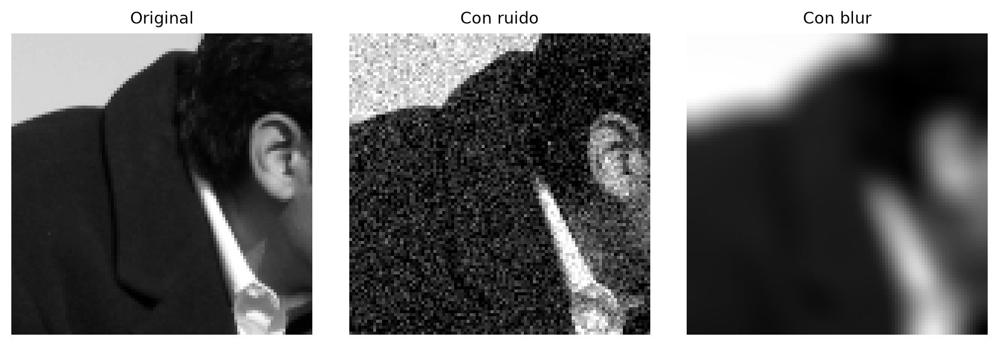
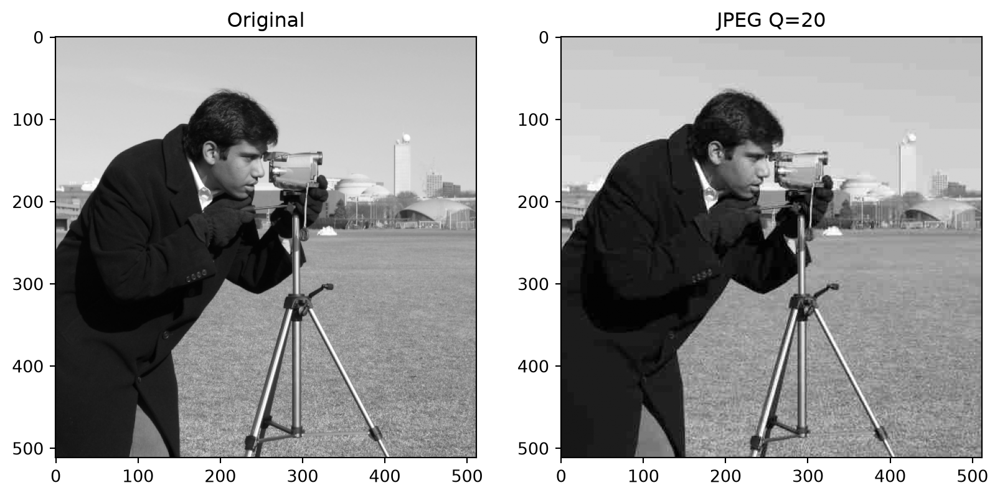
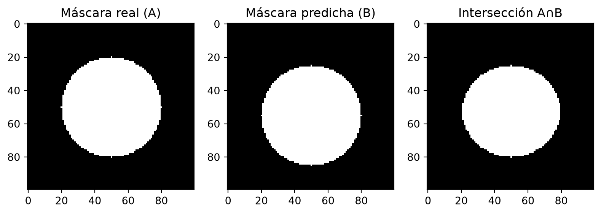
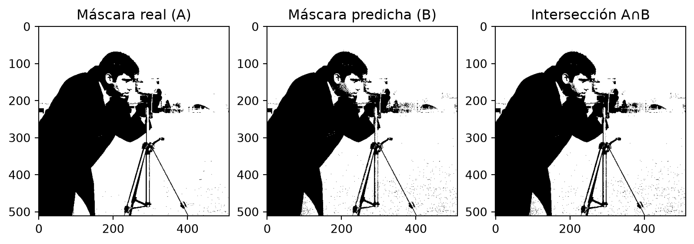
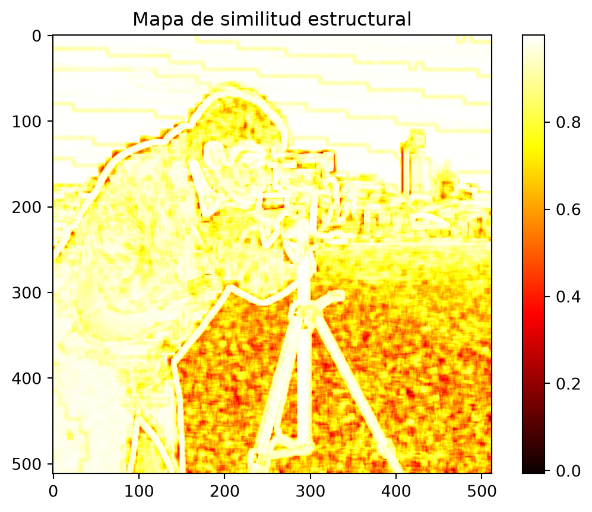
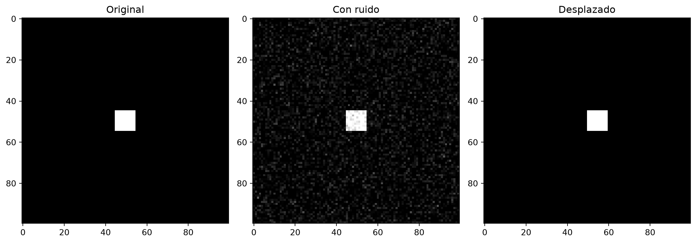
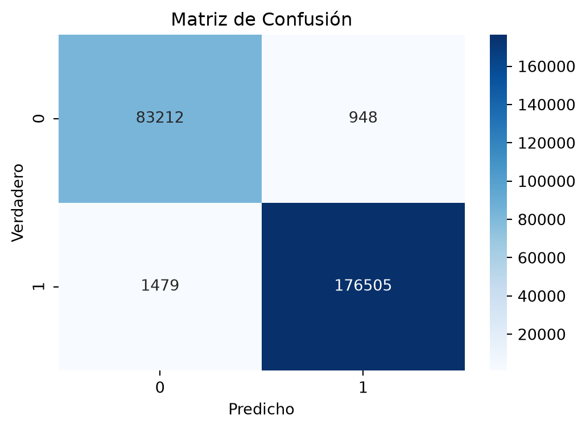

Una revisión de las métricas aplicadas en el procesamiento de imágenes
Con ejemplos en Python
0.1 Agenda
- Introducción a métricas de calidad
- Métricas matemáticas básicas (MSE, PSNR)
- Métricas perceptuales (SSIM)
- Métricas para segmentación
- Comparación práctica
- Conclusiones y recomendaciones
0.2 Introducción
0.2.1 ¿Por qué métricas?
- Evaluar objetivamente la calidad de imagen
- Comparar diferentes algoritmos de procesamiento
- Optimizar parámetros de procesamiento
- Control de calidad automático
0.2.2 Tipos principales:
- Sin referencia: evalúan calidad absoluta
- Con referencia: comparan con imagen original
- La calidad de imagen después del procesamiento se evalúa mediante métricas cuantitativas.
- Dos grandes enfoques:
- Métricas matemáticas: MSE, PSNR.
- Métricas perceptuales: inspiradas en el sistema visual humano (SSIM).
- Métricas matemáticas: MSE, PSNR.
- También se usan métricas en tareas específicas como segmentación.
0.3 Ejemplo base en Python
Code
import cv2
import numpy as np
import matplotlib.pyplot as plt
from skimage import data, img_as_float
from skimage.metrics import mean_squared_error, peak_signal_noise_ratio, structural_similarity
# Imagen original de prueba
original = img_as_float(data.camera())
# Simulación: imagen degradada (ruido gaussiano)
ruido = original + 0.05*np.random.randn(*original.shape)
ruido = np.clip(ruido, 0, 1)
# Visualización
fig, axes = plt.subplots(1,2, figsize=(10,5))
axes[0].imshow(original, cmap="gray"); axes[0].set_title("Original")
axes[1].imshow(ruido, cmap="gray"); axes[1].set_title("Con ruido")
plt.show()Code
mse = mean_squared_error(original, ruido)
psnr = peak_signal_noise_ratio(original, ruido, data_range=1.0)
print(f"MSE: {mse:.6f}")
print(f"PSNR: {psnr:.2f} dB")MSE: 0.002415
PSNR: 26.17 dB1 Compresión: Métricas clásicas
1.1 Error Cuadrático Medio (MSE)
\[ MSE = \frac{1}{MN}\sum_{x=1}^M \sum_{y=1}^N [I(x,y) - I'(x,y)]^2 \]
- Definición: mide la diferencia promedio al cuadrado entre la imagen original \(I(x,y)\) y la procesada \(I'(x,y)\).
- M, N: dimensiones de la imagen.
- Un valor de MSE = 0 significa que ambas imágenes son idénticas.
1.1.1 Interpretación
- MSE evalúa el error absoluto, pero no considera cómo lo percibe el ojo humano.
- Valores más bajos → imágenes más parecidas.
- Valores más altos → mayor diferencia entre original y procesada.
1.1.2 Rangos típicos (8 bits, escala de 0–255)
- 0 – 100 → diferencias imperceptibles o mínimas.
- 100 – 1000 → diferencias visibles pero moderadas.
- > 1000 → diferencias notables, degradación fuerte.
Nota: el rango depende del tamaño y tipo de imagen, por lo que se suele reportar junto con PSNR para una mejor interpretación.
1.2 Proporción Señal-Ruido Pico (PSNR)
\[ PSNR = 10 \cdot \log_{10}\left(\frac{(maxI)^2}{MSE}\right) \]
- Definición: mide la relación entre la señal máxima de la imagen y el ruido introducido por el procesamiento (compresión, transmisión, etc.).
- maxI: intensidad máxima posible de un píxel (255 en imágenes de 8 bits).
- MSE: error cuadrático medio entre la imagen original y la reconstruida.
1.2.1 Interpretación
- Valores más altos de PSNR → mejor calidad (menos ruido/distorsión).
- Valores bajos de PSNR → mayor degradación visual.
1.2.2 Rangos típicos
- > 40 dB → calidad excelente, casi indistinguible del original.
- 30–40 dB → calidad buena, diferencias leves.
- 20–30 dB → calidad aceptable pero con artefactos visibles.
- < 20 dB → calidad pobre, distorsión severa.
1.3 Ejemplo: Compresión JPEG
Code
# Guardamos y leemos con compresión JPEG
cv2.imwrite("temp.jpg", (original*255).astype(np.uint8), [int(cv2.IMWRITE_JPEG_QUALITY), 20])
jpeg = cv2.imread("temp.jpg", cv2.IMREAD_GRAYSCALE)/255.0
# Visualización
fig, axes = plt.subplots(1,2, figsize=(10,5))
axes[0].imshow(original, cmap="gray"); axes[0].set_title("Original")
axes[1].imshow(jpeg, cmap="gray"); axes[1].set_title("JPEG Q=20")
plt.show()
mse_jpeg = mean_squared_error(original, jpeg)
psnr_jpeg = peak_signal_noise_ratio(original, jpeg, data_range=1.0)
print("\nMétricas para compresión JPEG:")
print(f"MSE: {mse_jpeg:.6f}")
print(f"PSNR: {psnr_jpeg:.2f} dB")
Métricas para compresión JPEG:
MSE: 0.000947
PSNR: 30.24 dB1.4 Segmentación: Métricas (ejemplo)
1.4.1 Coeficiente de Jaccard
\[ J(A,B) = \frac{|A \cap B|}{|A \cup B|} \]
- Definición: mide la similitud entre dos conjuntos de píxeles:
- \(A\): máscara de referencia (segmentación “real” o ground truth).
- \(B\): máscara obtenida por el algoritmo de segmentación.
- \(A\): máscara de referencia (segmentación “real” o ground truth).
- Rango: \(0 \leq J(A,B) \leq 1\).
1.4.2 Interpretación
- J = 1 → las dos máscaras son idénticas (segmentación perfecta).
- J cercano a 0 → muy poca coincidencia entre predicción y referencia.
- Valores intermedios indican el grado de solapamiento.
1.4.3 Usos típicos
- Evaluación de segmentación médica (órganos, tumores).
- Comparación de detección de objetos en imágenes satelitales.
- Validación de algoritmos de visión por computadora.
1.5 Ejemplo práctico: Coeficiente de Jaccard
Code
import numpy as np
import matplotlib.pyplot as plt
from sklearn.metrics import jaccard_score
# Máscara de referencia (círculo)
x, y = np.ogrid[:100, :100]
mask_ref = (x-50)**2 + (y-50)**2 <= 30**2 # círculo en el centro
# Máscara predicha (círculo desplazado)
mask_pred = (x-55)**2 + (y-50)**2 <= 30**2
# Cálculo del coeficiente de Jaccard
jaccard = jaccard_score(mask_ref.ravel(), mask_pred.ravel())
print("Coeficiente de Jaccard:", jaccard)
# Visualización
fig, axes = plt.subplots(1,3, figsize=(10,3))
axes[0].imshow(mask_ref, cmap="gray"); axes[0].set_title("Máscara real (A)")
axes[1].imshow(mask_pred, cmap="gray"); axes[1].set_title("Máscara predicha (B)")
axes[2].imshow(mask_ref & mask_pred, cmap="gray"); axes[2].set_title("Intersección A∩B")
plt.show()Coeficiente de Jaccard: 0.809493264913406
Code
from skimage.filters import threshold_otsu
# Umbralado Otsu
thresh = threshold_otsu(original)
mask_ref = original > thresh # máscara de referencia
mask_pred = ruido > thresh # máscara sobre imagen ruidosa
# Visualización
fig, axes = plt.subplots(1,3, figsize=(10,3))
axes[0].imshow(mask_ref, cmap="gray"); axes[0].set_title("Máscara real (A)")
axes[1].imshow(mask_pred, cmap="gray"); axes[1].set_title("Máscara predicha (B)")
axes[2].imshow(mask_ref & mask_pred, cmap="gray"); axes[2].set_title("Intersección A∩B")
plt.show()
# Jaccard
from sklearn.metrics import jaccard_score
jaccard = jaccard_score(mask_ref.ravel(), mask_pred.ravel())
print(f"Coeficiente de Jaccard: {jaccard:.4f}")
Coeficiente de Jaccard: 0.98641.6 Calidad perceptual: SSIM
1.6.1 Structural Similarity Index (SSIM)
\[ SSIM(x,y) = \frac{(2\mu_x\mu_y + c_1)(2\sigma_{xy} + c_2)}{(\mu_x^2 + \mu_y^2 + c_1)(\sigma_x^2 + \sigma_y^2 + c_2)} \]
- Definición: mide la similitud perceptual entre dos imágenes, considerando:
- Luminancia (brillo promedio).
- Contraste (desviación estándar).
- Estructura (correlación local).
- Luminancia (brillo promedio).
1.6.2 Interpretación
- Rango: \(-1 \leq SSIM \leq 1\)
- \(SSIM = 1\) → imágenes idénticas.
- \(SSIM \approx 0\) → baja similitud estructural.
- A diferencia de \(MSE\) y \(PSNR\), \(SSIM\) se correlaciona mejor con la percepción humana.
1.7 Ejmplo práctico calidad perceptual: SSIM
Calidad perceptual entre original y jpeg
Code
ssim, diff = structural_similarity(original, jpeg, full=True, data_range=1.0)
ssimnp.float64(0.8545161159906697)Code
# Visualizar mapa de diferencias SSIM
plt.imshow(diff, cmap="hot")
plt.colorbar()
plt.title("Mapa de similitud estructural")
plt.show()
1.8 Limitaciones del MSE y PSNR
Code
# Crear dos imágenes con mismo MSE pero distinta percepción
import numpy as np
import matplotlib.pyplot as plt
from skimage.metrics import mean_squared_error
img1 = np.zeros((100, 100))
img1[45:55, 45:55] = 1 # cuadrado blanco
img2 = img1.copy()
img2 += 0.1 * np.random.randn(100, 100) # ruido gaussiano
img2 = np.clip(img2, 0, 1)
img3 = np.roll(img1, 5, axis=1) # desplazamiento horizontal
mse1 = mean_squared_error(img1, img2)
mse2 = mean_squared_error(img1, img3)
print(f"MSE ruido: {mse1:.6f}")
print(f"MSE desplazamiento: {mse2:.6f}")MSE ruido: 0.004949
MSE desplazamiento: 0.010000Code
fig, axes = plt.subplots(1, 3, figsize=(12, 4))
axes[0].imshow(img1, cmap='gray'); axes[0].set_title("Original")
axes[1].imshow(img2, cmap='gray'); axes[1].set_title("Con ruido")
axes[2].imshow(img3, cmap='gray'); axes[2].set_title("Desplazado")
plt.tight_layout()
plt.show()
Observación:
- \(MSE\) valores similares en ambas imágenes.
- Sin embargo, la percepción es muy distinta:
- Con ruido → el objeto se reconoce bien.
- Desplazado → el objeto cambia completamente de posición.
- Conclusión: \(MSE\) y \(PSNR\) no siempre reflejan la calidad perceptual.
2 Métricas de Segmentación
2.1 Segmentación: Matriz de confusión
Definición: tabla que resume los resultados de un clasificador (o segmentación) comparando etiquetas reales (\(y_{true}\)) contra las predichas (\(y_{pred}\)).
2.1.1 Estructura
| Predicho Positivo | Predicho Negativo | |
|---|---|---|
| Verdadero Positivo (TP) | píxeles de objeto correctamente detectados | |
| Verdadero Negativo (TN) | píxeles de fondo correctamente detectados | |
| Falso Positivo (FP) | píxeles clasificados como objeto pero que eran fondo | |
| Falso Negativo (FN) | píxeles de objeto que el algoritmo no detectó |
2.1.2 Métricas derivadas
Precisión:
\[ Precision = \frac{TP}{TP+FP} \]
(qué tan confiables son las detecciones positivas).
Recall / Sensibilidad:
\[ Recall = \frac{TP}{TP+FN} \]
(qué tanto detectamos de lo que realmente había).
F1-Score: media armónica entre Precisión y Recall.
2.1.3 Matriz de confusión
Code
from sklearn.metrics import confusion_matrix, classification_report
import seaborn as sns
# Crear ejemplo de segmentación
y_true = mask_ref.ravel()
y_pred = mask_pred.ravel()
cm = confusion_matrix(y_true, y_pred)
# Visualizar matriz de confusión
plt.figure(figsize=(6,4))
sns.heatmap(cm, annot=True, fmt='d', cmap='Blues')
plt.title('Matriz de Confusión')
plt.ylabel('Verdadero')
plt.xlabel('Predicho')
plt.show()
# Métricas derivadas
from sklearn.metrics import precision_score, recall_score, f1_score
precision = precision_score(y_true, y_pred)
recall = recall_score(y_true, y_pred)
f1 = f1_score(y_true, y_pred)
print(f"Precisión: {precision:.4f}")
print(f"Sensibilidad (Recall): {recall:.4f}")
print(f"F1-Score: {f1:.4f}")
Precisión: 0.9947
Sensibilidad (Recall): 0.9917
F1-Score: 0.99322.2 Comparación de Métricas
Code
# Tabla comparativa de diferentes degradaciones
degradaciones = {
'Original': original,
'Ruido Gaussiano': ruido,
'JPEG Q=20': jpeg,
'Blur': cv2.GaussianBlur(original, (15,15), 5)
}
resultados = []
for nombre, img in degradaciones.items():
if nombre != 'Original':
mse_val = mean_squared_error(original, img)
psnr_val = peak_signal_noise_ratio(original, img, data_range=1.0)
ssim_val, _ = structural_similarity(original, img, full=True, data_range=1.0)
resultados.append([nombre, mse_val, psnr_val, ssim_val])
import pandas as pd
df = pd.DataFrame(resultados, columns=['Degradación', 'MSE', 'PSNR (dB)', 'SSIM'])
print(df.to_string(index=False, float_format='%.4f')) Degradación MSE PSNR (dB) SSIM
Ruido Gaussiano 0.0024 26.1706 0.5217
JPEG Q=20 0.0009 30.2380 0.8545
Blur 0.0050 22.9801 0.64542.2.1 Interpretación:
- PSNR > 30 dB: Buena calidad
- SSIM > 0.9: Muy similar estructuralmente
- MSE < 0.01: Diferencia baja (en rango [0,1])
2.3 Recomendaciones Prácticas
2.3.1 Por tarea:
Compresión de imágenes:
- PSNR para comparación rápida
- SSIM para calidad perceptual
Restauración de imágenes:
- SSIM (correlaciona mejor con percepción)
- MSE para optimización
Segmentación:
- IoU (Jaccard) para detección de objetos
- F1-Score para clasificación píxel a píxel
2.3.2 Limitaciones:
- MSE/PSNR: No consideran estructura visual
- SSIM: Computacionalmente más costoso
- Métricas de segmentación: Sensibles a desbalance de clases
2.3.3 Buenas prácticas:
- Usar múltiples métricas
- Validar con evaluación humana
- Considerar el contexto de la aplicación
2.4 Referencias y Recursos
2.4.1 Papers fundamentales:
- Wang et al. (2004): “Image quality assessment: from error visibility to structural similarity”
- Sheikh & Bovik (2006): “Image information and visual quality”
2.4.2 Librerías útiles:
- scikit-image: métricas básicas
- pytorch-fid: para deep learning